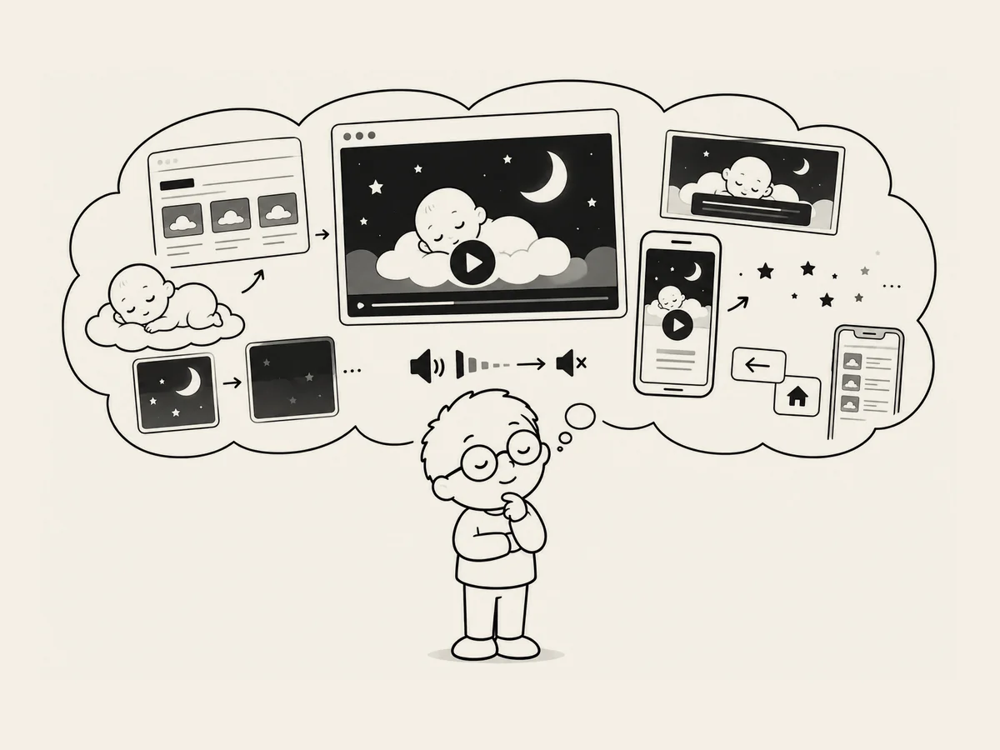

5.
상상을 자세하게.
첫 번째 웹사이트를 만들 때는 기획이 완성되기 전에 만들기를 시작했다.
만들면서 생각하고, 생각하면서 고쳤다.
한번 해보니 알 것 같았다.
내 머릿속에 웹사이트 전체가 그려지는 게 중요했다.
이번에는 만들기 전에 기획을 오래 했다.
첫 화면은 어떻게 보일지.
캐릭터는 어디에 있을지.
버튼은 어디에 둘지.
영상이 시작될 때 자막이 어떻게 나올지.
뒤로 가기를 누르면 어디로 갈지.
휴대폰에서는 어떻게 보일지.
글로 만든 일종의 밑그림이다.
최대한 자세하게 그렸다.
AI에게 보여줬다.
이렇게 만들 거야.
“뭘 더 기획해야 해?”
AI와 상의하며 좀 더 자세하게 다듬었다.
아기가 잠들어가는 과정도 섬세하게 다듬었다.
아기들이 평균적으로 잠드는 데 걸리는 시간과 전체 수면 시간도 찾아봤다.
그걸 고려해 자장가 소리도 점점 작아지고, 영상도 어두워지게 했다.
달도 별도 잠을 깨우지 않게 천천히 사라지게 만들었다.
상상을 현실로 만드는 건 AI가 잘한다.
상상을 자세하게 하는 건 나의 몫이다.
